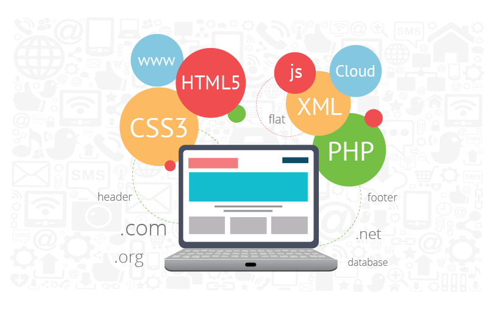

Hi, My name is Shriyansh
and I am a passionate
Software Engineer

Project-Details

Online Voting System
Create a website using PHP, which can be used for conducting elections in online medium. Voters can register themselves on website and login, logout functions are also there Data of all user maintained in the database.
Spotify Clone
Developed a web site using HTML, CSS, JAVASCRIPT in which music available for listening. Users can play songs by clicking play button and also use forward and backward options to move to different music.
CodeSmashers
Developed a website using wordpress technology, in which we are able to read various blogs or articles on various technologies.
About
I am a passionate and skilled software developer with experience in web development using PHP, HTML, CSS, and JavaScript. My projects include an Online voting system and a Spotify clone. I have a strong foundation in programming languages like Python, C++, and Java. With a focus on data analytics and MySQL, I strive to create innovative and efficient solutions. Graduating with a Information technology, I am eager to contribute my skills and expertise to a dynamic and challenging environment.